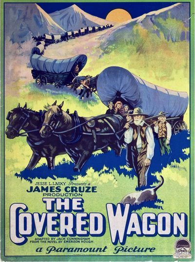

The Covered Wagon
Starring: J. Warren Kerrigan, Lois Wilson, Alan Hale
Director: James Cruze
Writer: Jack Cunningham
Producer: Jesse Louis Lasky
Studio: Famous Players-Lasky Corporation, Paramount Pictures
The Covered Wagon is a 1923 American silent epic Western film released by Paramount Pictures. The film was directed by James Cruze based on a 1922 novel of the same name by Emerson Hough about a group of pioneers traveling through the old West from Kansas to Oregon. J. Warren Kerrigan starred as Will Banion and Lois Wilson as Molly Wingate.
Trivia
- The film was a major production for its time, with an estimate budget of $782,000.
- The covered wagons gathered by Paramount from all over the Southwest were not replicas, but the real wagons that had brought the pioneers west.
- The producers offered the owners $2 a day (equal to $37.79 today) and feed for their stock if they would bring the wagons for the movie.
Filming Locations
- California
- Utah
- The dramatic buffalo hunt and buffalo stampede scenes were filmed on Antelope Island, Great Salt Lake, Utah.
Previous Showings
1 Run • 1 Festival
317 tickets sold
All runs on record (1):
- October 4, 2025 · 317 ticketsClassic Westernsw/ The Big Trail